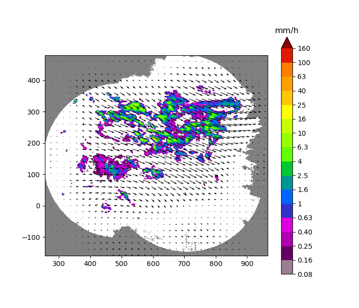

Posts tagged devel
Pyrad
Pyrad is a real-time (and off-line) data processing framework developed by MeteoSwiss and MeteoFrance. The framework is aimed at processing and visualizing polar data from individual weather radars as well as composite Cartesian products both off-line and in real time. It is written in the Python language.
It is capable of ingesting data stored in the most common radar data formats, e.g. C/FRadial, ODIM, Rainbow, NEXRAD level-2 among others.
rainymotion
rainymotion is a Python library for radar-based precipitation nowcasting based on optical flow techniques. The main idea is to provide a stack of open models which can serve as a transparent benchmark for further development of nowcasting techniques. An extensive verification study in Germany has shown that the rainymotion models based on Dense optical flow are at least equivalent if not superior to state-of-the-art operational nowcasting techniques.
pysteps
pysteps is a community that develops and maintains an easy to use, modular and open source python framework for precipitation short-term ensemble prediction systems.

ARM Py-ART
The Python ARM Radar Toolkit, Py-ART, is an open source Python module containing a growing collection of weather radar algorithms and utilities build on top of the Scientific Python stack and distributed under the 3-Clause BSD license. Py-ART is used by the Atmospheric Radiation Measurement (ARM) Climate Research Facility for working with data from a number of precipitation and cloud radars, but has been designed so that it can be used by others in the radar and atmospheric communities to examine, processes, and analyse data from many types of weather radars.
http://arm-doe.github.io/pyart/

BALTRAD
BALTRAD offers software for exchanging weather radar data in real time, and processing data using a common “toolbox” of algorithms. The data exchange functionality can be used stand-alone, as can the toolbox. While the focus is on creating an operational system, the design is also intended to help bridge the gap between research and operational communities.
Radx
The Radx C++ package was developed at NCAR to provide support for the new CfRadial radar data format, and to provide translation between common radar data formats. Radx is designed to be run on LINUX and MacOSX platforms, but should also run on Windows under Cygwin. It comprises a C++ library, which may be used by developers, and a number of applications built on that library.
https://ral.ucar.edu/projects/titan/docs/radial_formats/radx.html
Radar Tools for ArcGIS
This tools enable ArcGIS to order, download and visualize Level II and Level III data in vector and raster formats.
RSL in IDL
RSL in IDL is a package of routines for working with TRMM Ground Validation radar data. The programs and data structures are modeled on TRMM GV’s C-based Radar Software Library (RSL), but are written in the Interactive Data Language (IDL). The idea is to provide the utility of RSL in an IDL environment.
https://trmm-fc.gsfc.nasa.gov/trmm_gv/software/rsl_in_idl/RSL_in_IDL.php
RSL
NASA’s Radar Software Library (RSL) was developed to support the Tropical Rainfall Measuring Mission (TRMM). It is designed to read data from a variety of weather radar formats into a uniform structure, and provide tools for working with the data. It is written in the C language.
PyTDA
This software provides Python functions that will estimate turbulence from Doppler radar data ingested via Py-ART. Specifically, this software will estimate the cubic root of eddy dissipation rate, given input radar data containing reflectivity and spectrum width. Can be done on an individual sweep basis or by processing a full volume at once. If the latter, a new turbulence field is created within the Py-ART radar object. The turbulence algorithm is based on the NCAR Turbulence Detection Algorithm (NTDA), adapted to work with a single radar.
PyRadarMet
A python package that computes various fundamental characteristics for use in radar meteorology.
Meant to process Level 1.5 to Level 2 data.
Open Source Weather Radar Virtual Machine
This projects creates a Linux Virtual Machine image (VM) with a number of open source weather radar software packages (BALTRAD, Py-ART, Radx, RSL, and wradlib) which can be run using VirtualBox on a number of host OSes.
The creation of this VM has been tested on Ubuntu 12.04 and Mac OS X 10.9 hosts running vagrant 1.5.4. Other host should be supported if a recent version of vagrant (1.3+) and VirtualBox can be installed.
MultiDop
MultiDop is a Python-based interface between the C-based DDA code developed at University of Oklahoma and the Python Atmospheric Radiation Measurement Radar Toolkit (Py-ART) software developed at Argonne National Lab. Use this software to perform 3D wind analyses using 2-3 independent Doppler radars.
MMM-Py
The National Oceanic and Atmospheric Administration (NOAA) regularly produces national 3D radar reflectivity mosaics via its Multi-Radar/Multi-Sensor (MRMS) system. These mosaics are wonderful for storm and precipitation analysis and research, but they are distributed in odd formats that NOAA is ever changing. Sometimes you just want to read a file and make a plot! This is what MMM-Py is for. With it, you can read any version of the MRMS radar mosaics, past or present, and you can analyze, plot, subsection, and output custom mosaics of your own, which MMM-Py can ingest later. MMM-Py is free and open source. It is capable of producing publication-ready figures and analyses, but it also can do quicklook plots so you can check out the cool storm that just happened.
ARTView
Visualization tool leveraging PyArt package. Allows browsing data and accessing some PyArt calculations. Also working toward Solo-like editing alternative.